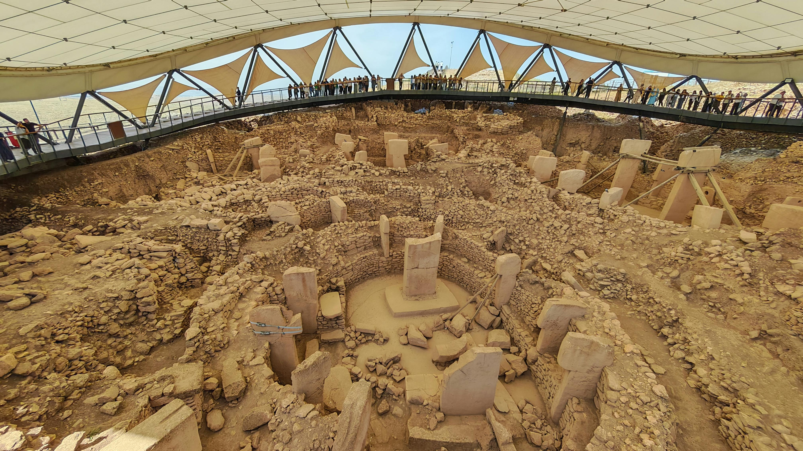

¿Que es la Arqueología?
La arqueologia estudia las culturas humanas a traves de sus restos materiales: construcciones,herramientas, arte y màs
Su objetivo es reconstruir y entender la historia de las culturas y civilizaciones que ya no existen, pero que dejaron vestigios de su existencia.
Los arqueólogos trabajan excavando y analizando estos restos para obtener información sobre cómo vivían las personas, qué comían, cómo se organizaban socialmente, qué creencias tenían, entre otros aspectos. No solo se centra en las grandes civilizaciones, sino también en comunidades más pequeñas y pueblos antiguos.
Además de las excavaciones, los arqueólogos también utilizan otras técnicas como la datación por carbono-14, estudios de restos humanos, análisis de materiales y tecnologías, y la interpretación de fuentes escritas cuando están disponibles. La arqueología no solo se limita a encontrar artefactos, sino también a entender su contexto y lo que nos dice sobre el modo de vida de los pueblos antiguos.
Algunas ramas de la arqueología:
Arqueología prehistórica: Estudia sociedades anteriores a la invención de la escritur.
Arqueología clásica: Se enfoca en las civilizaciones de la Antigua Grecia y Roma.
Arqueología histórica: Estudia culturas con registros escritos, como la Edad Media o la época colonial.
Arqueología bíblica: Investiga lugares y culturas mencionados en la Biblia.
Arqueología subacuática: Examina restos sumergidos, como barcos hundidos o ciudades bajo el agua.
Arqueología industrial: Analiza los vestigios de la Revolución Industrial y procesos fabriles
Métodos comunes en arqueología:
Excavación sistemática
Datación por carbono 14 (C14)
Fotogrametría y escaneo 3D
Análisis de materiales (cerámica, metales, huesos, etc.)
